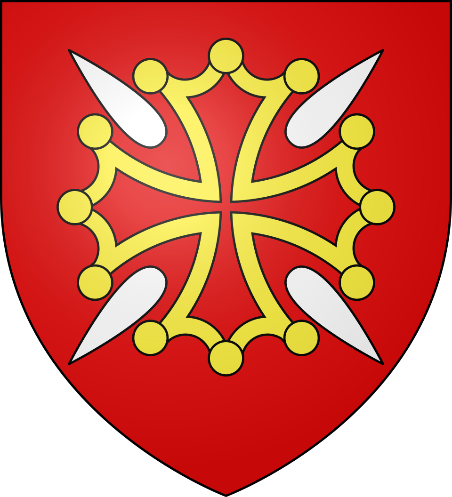
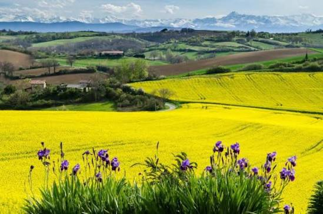

Le Volvestre
et les coteaux


⟹ Paysages emblématiques ⟸

Entre la vallée de la Garonne à l’ouest et celle de l’Ariège à l’est, le Volvestre forme un territoire de collines agricoles resserrées et souvent plus pentues que celles du Lauragais voisin. Au sud, il s’appuie sur les reliefs des Petites Pyrénées.
Les vallées de l’Arize et de la Lèze organisent le territoire. Villages, fermes isolées, cultures, ripisylves et coteaux composent un paysage rural varié où les vues s’ouvrent et se referment au rythme du relief.

Le Volvestre se distingue par un relief collinaire aux ondulations resserrées. Les multiples vallées secondaires découpent les coteaux et renforcent la diversité des orientations et des points de vue.
L’agriculture maintient de grands espaces ouverts. Le long des rivières et ruisseaux, les ripisylves forment des cordons végétaux très lisibles qui structurent le paysage.
Maintien des ripisylves : les boisements de berge constituent des repères paysagers et des corridors écologiques importants.
Étalement résidentiel : l’habitat dispersé peut modifier le caractère rural des coteaux et des entrées de bourgs.
Évolution agricole : la simplification des parcelles et la disparition d’éléments végétaux peuvent réduire la diversité du paysage.
Rieux-Volvestre permet d’associer la découverte de la vallée de l’Arize à celle d’un bourg historique.
Montesquieu-Volvestre constitue un bon point de départ pour parcourir les coteaux et la vallée de l’Arize.
La vallée de la Lèze, vers Saint-Sulpice-sur-Lèze, offre une autre lecture du Volvestre entre cultures, villages et cordons boisés.